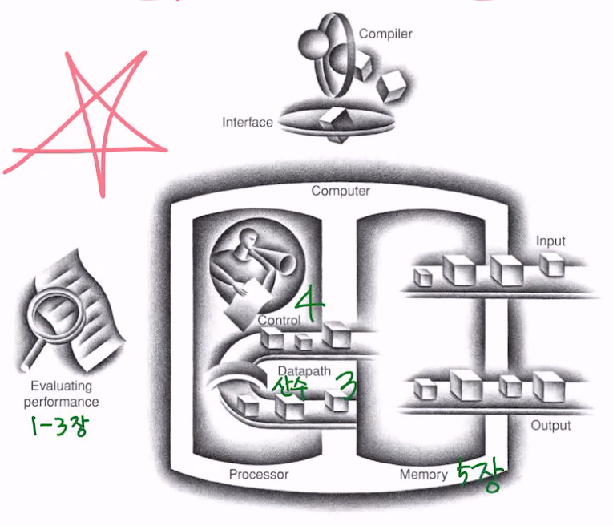

Classes of Computers
PCs
개인을 위해, 가장 잘 알려진 컴퓨터 형태, 단일 유저, 낮은 가격, third-party(제3자) software
** first: 직접 만듦, sec: 외주, third: 아무나
Servers
큰 프로그램, 여러 유저, 네트워크 통해서만 접속 가능, 더 나은 연산, 저장 공간
greater emphasis on dependability (신뢰성, 의존성 아님)
Supercomputers
거대한 수의 프로세서, 메모리, 완전 비싼..., 가장 높은 성능, 하지만 컴퓨터 시장에서 작은 비중
Embedded computers
다른 장치 안에 있는 컴퓨터, 한정된 기능, 비용과 전력 줄이는 것이 가장 주요 목표
lower tolerance for failure (실패를 덜 허용)
Range of Decimal and Binary Values
kilobyte KB 1000^1 kibibyte KiB 2^10 1024/1000 = 2%
| megabyte | MB | 1000^2 | mebibyte | MiB | 2^20 | 5% |
| gigabyte | GB | 1000^3 | gibibyte | GiB | 2^30 | 7% |
| terabyte | TB | 1000^4 | tebibyte | TiB | 2^40 | 10% |
| petabyte | PB | 1000^5 | pebibyte | PiB | 2^50 | 13% |
단위 변환 조심
표 아래로 내려갈 수록, 단위가 커질 수록 Larger 차이가 커짐
The PostPC Era
Personal Mobile Devices (PMDs)
ex. 스마트폰, 태블릿
Cloud computing
인터넷을 통해 서비스 제공 (아마존, 구글)
수량 추이
휴대폰 >> 태블릿, 스마트폰 상승세
Big Picture
Input, Output, Memory, Processor (Datapath(산수), Control)

Safe Place for Data
Volatile (Primary or Main) memory
휘발성, 실행 중 정보를 갖고 있음
DRAM (Dynamic Random Access Memory) 에 주로 집적 회로 내에 완성형 칩으로 설치
데이터가 주기적으로 업데이트 되는 다이나믹 구조
충전 system이 없기 때문에 전하가 날아가서 전원이 꺼지면 DRAM 내의 모든 데이터는 사라짐
어떤 위치로의 random access (임의 접근) 을 가능하게 함
→ 전원을 방금 켰으면 DRAM에 정보가 없음 (empty 상태)
Non-Volatile (Secondary) memory
비휘발성, 프로그램이 돌고 있지 않을 때 영구히 저장
- Flash memory
주로 모바일에서 flash, DRAM 보다는 느리고 싼데, magnetic 보다는 빠르다
- Magnetic disk (hard disk)
NAS에서 많이 사용 ... 아주 싸고 아주 대용량
Networks
Communications between computers
- LAN (Local area network): Ethernet
1km, 100GB/s, 그닥 넓지 않음
- WAN (Wide area network): Internet
광섬유
- Wireless network
WiFi, Bluetooth
컴퓨터 구조 분야의 7가지 위대한 아이디어
Moore의 법칙을 고려한 설계- 추상화: 설계를 단순화하는 추상화 (abstraction)
- 속도: 자주 생기는 일을 빠르게 (common case fast)
- 병렬: 병렬성을 통한 성능 개선 (parallelism)
- 파이프라이닝을 통한 성능 개선 (pipelining)
- 예측: 예측을 통한 성능 개선 (prediction)
- 3장 branch instruction 건너뛰기
- 메모리 계층 기능 (hierarchy)(DRAM) 자주 사용하는 메모리 추출해서 작게 만들어 놓음, 5장
- 최상위 계층에는 가격이 제일 비싸지만 작고 빠른 메모리, 캐시 사용
- 신뢰성: 여유분(redundancy)을 이용한 신뢰성 개선 (dependability)
프로그램 아래
Applications software
high-level language (C, Java) 에서 쓰인, user-friendly
Systems software
- 운영 체제 OS
입출력 작업 처리, 보조기억장치 및 메모리 할당, task 스케줄링, 자원 공유
ex) linux, ios, windows
- 컴파일러
최적화도 해줌, 하이 레벨 언어로 작성된 프로그램을 하드웨어가 실행할 수 있는 명령어로 번역
하드웨어
총 4가지, 프로세서 2개, 메모리 1개, 입출력 장치 1개
Levels of Program code
하이 레벨 언어
생산성과 portability (언어 변환 쉬움)
어셈블리 언어
지시어를 표현하는 텍스트, 심볼릭 노테이션을 이진수로
ex) add A, B → 1000110010100000
하드웨어
이진 자리 수 binary digits (bits), 인코딩 된 지시어와 데이터
Performance 이해
알고리즘
실행되는 동작 수 결정
프로그래밍 언어, 컴파일러
각 동작에 대해 실행되는 기계 지시어 결정
프로세서
지시어가 얼마나 빨리 실행될지 결정
입출력 장치 (운영체제 포함)
입출력 동작이 얼마나 빨리 실행될지 결정
Performance 성장
관련 performance
- 트랜지스터
전기로 제어되는 온/오프 스위치
- 초대규모집적회로 VLSI (Very Large Scale Integrated Circuit)
수백만 트랜지스터를 포함한 칩
성장 속도가 둔화되어 2~3년에 2배 증가
→ 18~24개월마다 칩에 집적되는 소자의 수가 2배가 될 것이라는 Moore의 법칙이 더 이상 적용되지 않음
프로세서와 메모리 생산 기술
칩 생산 공정
- 실리콘 채워서, 불순물 제거하려고 빙글빙글
- 식혀서 단면으로 슬라이스
- 빈 웨이퍼
- 20~40 단계의 공정
- 패턴 웨이퍼
- 검사해서 불량 부분에 x 표시, 정사각형으로 자르기
- 검사를 거친 다이들이 만들어짐, 위 예시에서 수율은 17/20, 즉 85%
- 통과한 다이들은 패키지에 붙임
- 납품 전에 다시 한 번 검사
집적 회로의 가격
다이 영역과 결함 비율은 비선형
- 와퍼 가격과 영역은 고정
- 결함 비율은 공정 과정에 의해 결정
- 다이 영역은 아키텍쳐와 회로 설계에 의해 결정
다이 원가 = 웨어퍼당 가격 / (웨이퍼 당 다이의 수 * 수율)
웨이퍼 당 다이의 수 = 웨이퍼의 면적 / 다이의 면적
완전히 같지는 않은데, 웨이퍼는 원이고 다이는 사각형이라서
수율 = 1 / (1 + (면적 당 결함의 수 * 다이 면적 / 2))**2
수율 = 결함 개수 빼고 / 웨이퍼 1개
원가는 결함의 비율이나 다이와 웨이퍼의 크기에 따라 달라짐
→ 다이 크기에 선형으로 비례하지 않음